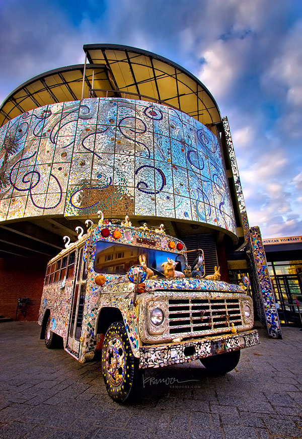
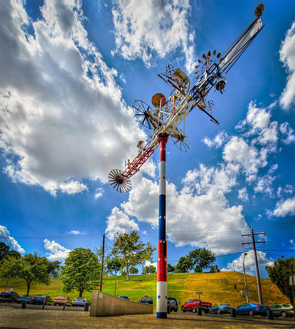

American Visionary Art Museum
  800 Key Highway, Baltimore, MD 21230 410.244.1900What is Visionary Art?
"Visionary art as defined for the purposes of the American Visionary Art Museum refers to art produced by self-taught individuals, usually without formal training, whose works arise from an innate personal vision that revels foremost in the creative act itself."
In short, visionary art begins by listening to the inner voices of the soul, and often may not even be thought of as 'art' by its creator.
How is visionary art different from folk art?
The German origin of the word "folk," or volk, suggests "of the people." The term "folk art" can be applied in the broadest sense: it's art of or by the people. At AVAM, we don't define visionary art as "folk art," or even "contemporary folk art," principally because organizations like the National Endowment for the Arts rightfully define folk art as art coming out of a specifically identifiable tradition. Folk art is "learned at the knee" and passed from generation to generation, or through established cultural community traditions, like Hopi Native Americans making Kachina dolls, sailors making macramé, and the Amish making hex signs. The "contemporary folk art" label isn't appropriate for AVAM either, since we like to show works created by self-taught artists who may have lived hundreds of years ago, alongside work that may have been created last year. The exhibition themes we choose to explore are, thus, innately timeless -with the power to inspire human beings in highly personal acts of creation. Unlike folk art, visionary art is entirely spontaneous and individualized.
So when is visionary art clearly not folk art?
The essential difference between the two, though both may at times use similar materials and methods, is that visionary artists don't listen to anyone else's traditions. They invent their own. They hear their own inner voice so resoundingly that they may not even think of what they do as 'art.' Dubuffet's beloved Art Brut Collections, formed exclusively from the "raw art" creations of non-artists, such as street people, hermits, factory workers, housewives and psychic mediums, motivated him to say: "Art is at its best when it forgets its very name." It is this listening to one's inner voice with such focused attention that contributes to the unusually large number of visionary artworks, many of which took decades to create. Yet there are still common threads. The most common theme of visionary artists worldwide is the backyard recreation of the Garden of Eden and other utopian visions – quite literally building heaven on earth.
Can't trained artists also hear their own voices?
Absolutely. All of us at AVAM enjoy and respect the learning that comes from academic study or through apprenticeship to a trained artist. We dedicate AVAM exclusively, however, as a place devoted to the other path of mastery – the intuitive path of learning to listen to the small, soft voice within. We believe there is great power in not knowing what will or won't work, and we adhere to the importance of not being immersed in rule-based systems which can cloud one's vision. As in science, ignorance often gives birth to genuinely new inventions and a re-examination of what has already been dismissed. Jonathan Swift defined this kind of vision so perfectly: "Vision is the art of seeing things invisible." Discovering possibilities that others do not see is what visionaries do best.
How do you find all these works you exhibit? Who gets to pick?
We are committed to unveiling a great range of the best of visionary art by exploring one unifying theme at a time. We seek out individual guest curators who know, respect, and adore visionary art and who are likely to have their own special relationship with a particular exhibition theme. We like them to lead a full life quite apart from their curatorial abilities, so that their personal richness and other interests can influence their show. Check out "AVAM's Sure-Fire Recipe for Enchantment" below - a starting point for creating our one-of-a-kind exhibitions.